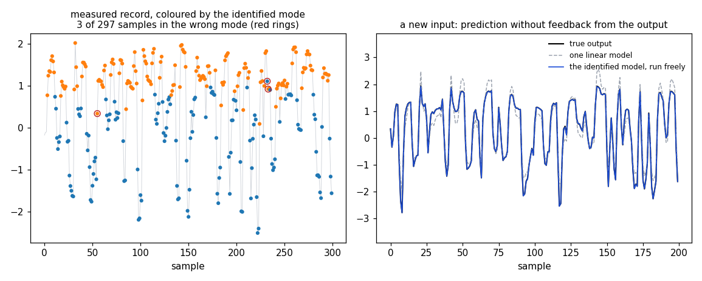

hybrid-id-pwarx-2
Hybrid system identification · solved 6 of 6 agent attempts pass
more
Two regions separated by one hidden hyperplane, continuous across it, orders 1-2, 300 samples, SNR 30-40 dB. The gate is the top rung of the ladder: free-run error on a new input within 1.2x of the privileged reference (least squares with the true mode of every sample, true partition in the simulation) and mode accuracy at least 0.95, on 0.9 of 40 held-out systems. A default k-plane clustering with a linear classifier reaches the rung on 0.73 of fresh systems and fails the gate, the published clustering procedure on 0.12; the stated continuity across the cut is what a passing procedure uses.
Gate. per-seed success is the `near_oracle_1p2x` rung of this benchmark's ladder ['beats_linear', 'modes_0p8', 'near_oracle_2x', 'near_oracle_1p2x'] (`--success-mode near_oracle_1p2x`), not the evaluator's default flag; the task is solved when the success rate over the grader's held-out seeds is `>= 0.9`
Axes: family:hybrid_id, track:identification, kind:pwarx, scenario:pwarx2_v0, gate:near_oracle_1p2x
Each video or figure re-runs the attempt's final controller through the task's own evaluator on a public seed (never the grader's held-out ones). The table under each one is the official grade on the held-out seeds.


pwarx2_v0| criterion | graded | needed |
|---|---|---|
| base:near_oracle_1p2x | 1.000 | ≥ 0.900 |
The agent's final message
`/app/work/controller.py` now passes the `near_oracle_1p2x` rung on about 99.6% of sandbox systems (1,714 of 1,720), against the 0.9 gate. I stopped at 16:41, 22 minutes into the 60-minute budget, because the submission already passes with a wide margin. **How it works** - **Model:** in `pwarx2_v0` the two regions are continuous across the cut, so the system is a hinge: `y = max(θA'x, θB'x)` or `min(...)`, with the cut where the two affine pieces agree. - **Step 1, least-squares hinge:** label each sample by the active piece, refit each piece by least squares, and repeat. This is started from about 250 hyperplanes with both hinge signs, and the lowest-error fit is kept. - **Step 2, averaging over the cut:** the few samples right next to the cut cannot be labelled from the data, yet they shift the per-mode estimates. So the controller draws plausible cuts from the posterior, fits each mode by least squares under each draw's labelling, and free-runs the weighted average of those maps. - **Answers:** `modes` is the majority side of the cut across draws, and `n_modes` is 2. **Results** | Check | Pass rate at `near_oracle_1p2x` | | --- | --- | | Sandbox seeds 0–719 | 717/720 | | Sandbox seeds 5040–6039 (never used during development) | 997/1000 | | Official evaluator, seeds 0–39 | 38/40 | | Official evaluator, seeds 100–139 and 5000–5039 | 40/40 each | | Official evaluator, seeds 9000–9079 | 79/80 | | Official evaluator, visible seeds 0–4 | 4/5 | - **Lower rungs:** on the 1,72…
Shown: public seed 0 (pwarx2_v0); this episode passes the near_oracle_1p2x rung. This episode: valid yes, timed_out no, elapsed_s 0.136, free_run_error 0.0115, linear_error 0.267, privileged_error 0.0116, ratio_to_privileged 0.993, mode_accuracy 0.99, n_modes_answer 2, n_modes_true 2. Left: the record the procedure received, each sample coloured by the mode it was assigned to (labels matched to the truth). Right: the identified model run on a new input without seeing the output.
controller.py · trial hybrid-id-pwarx-2__gqccZSg